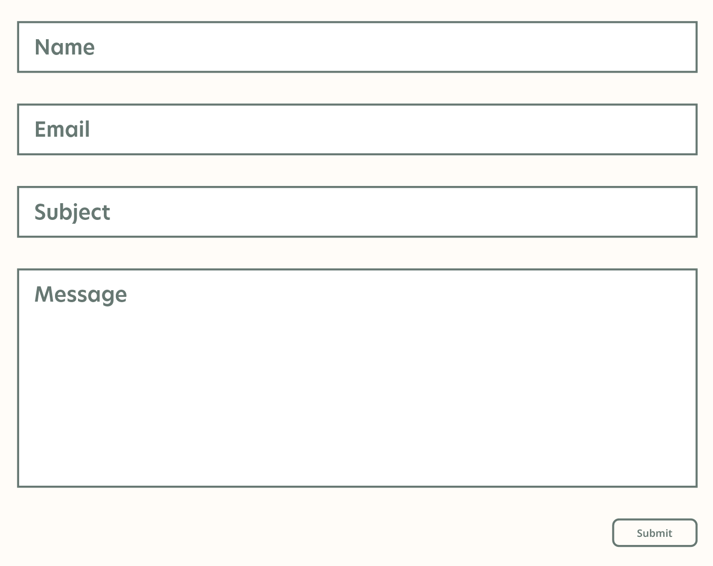
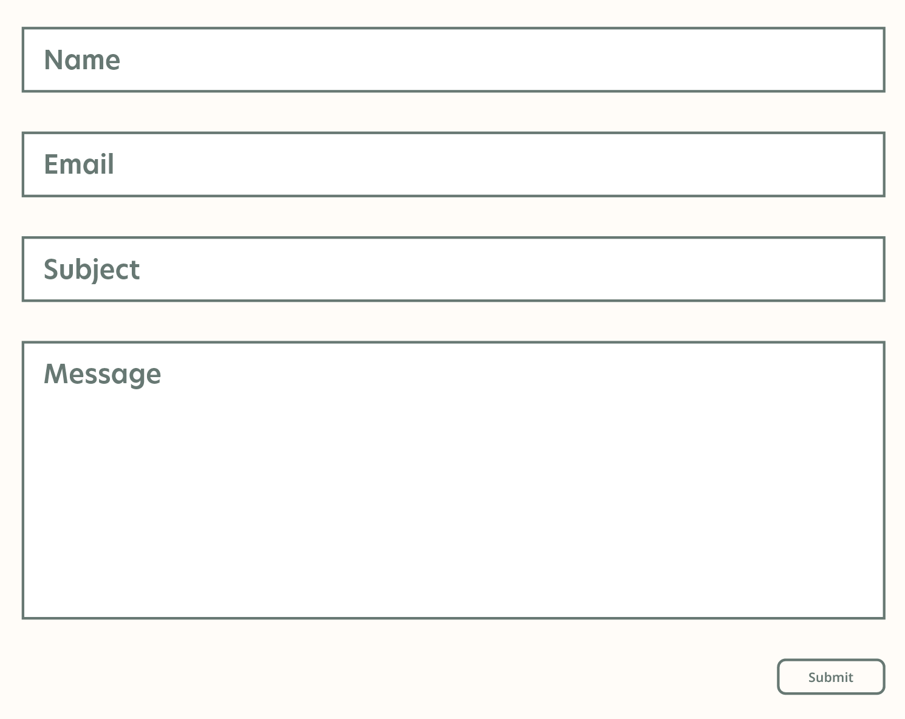

Situation Analysis
You can view the complete Situation Analysis in the final Campaign Document
About the Client
Auberge de Mon Petit Chum is a small bed and breakfast located in Wakefield, Quebec. Dawn, the owner, provides a highly personalized experience for her guests to make them feel at home. Some of her services include a complimentary homemade breakfast and packages for guests looking to explore some of the activities in and around Wakefield.
Original Website
SWOT Analysis
User Personas
Our Challenge
Show customers how, in a sea of lookalike accommodation options, Auberge de Mon Petit Chum delivers a unique authentic travel experience in the heart of Wakefield for travelers who value comfort, cost, authenticity, and a touch of personal flair.
Logo and Mood Board Inspiration
Color: Green to represent new beginnings, growth, and the Wakefield scenery.
Logo: Focused on the home & nestled in the center for safety
Imagery: Showcase the beauty of Wakefield.
Final Thoughts and Lessons Learned
The time constraints of the due dates for specific deliverables prevented us from being able to conduct testing on our mockups. Conducting testing of our live prototype/website rough draft then limited our ability to make changes. With the time constraints given, it would have been beneficial to at least test our wireframes with users to get feedback earlier in the process.
 
